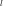
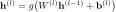
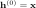
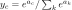
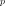
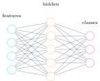

hidden layers with non-linear activations, and an output layer with one neuron per class; with enough hidden units it can approximate any decision boundary, and it is trained by backpropagation.
hidden layers with non-linear activations, and an output layer with one neuron per class; with enough hidden units it can approximate any decision boundary, and it is trained by backpropagation.Construction
Layer

computes
, with
. Input neurons are linear (they pass the features); hidden and output neurons usually sigmoidal or ReLU; the output often uses softmax
so that outputs estimate posterior probabilities, and the pixel goes to the largest.- input layer:

neurons (features); - hidden layers: size chosen by the complexity of the problem;
- output layer:
 neurons (classes).
neurons (classes).
Families: feed-forward (perceptron, MLP, RBF networks, probabilistic networks) vs recurrent (Hopfield, ART: bidirectional connections, dynamic).
Properties to balance: capacity (how many samples it can memorise, how complex a function it can represent), pattern complexity (training samples needed to generalise), computational complexity of training.
Picture

Intuition
Hidden layers invent their own features — combinations of bands that make the classes easier to separate — instead of relying on hand-made indices.
Pitfall
Too many hidden neurons for the training set overfit: perfect on training pixels, poor on the map. Use a validation set, early stopping and regularisation.